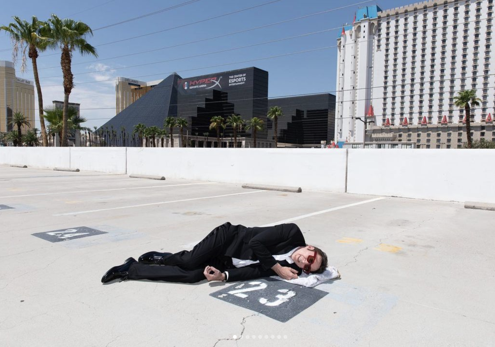
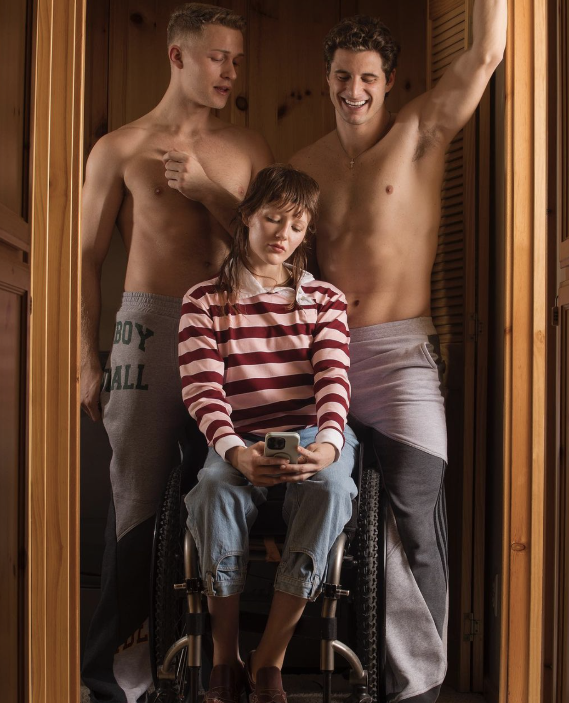
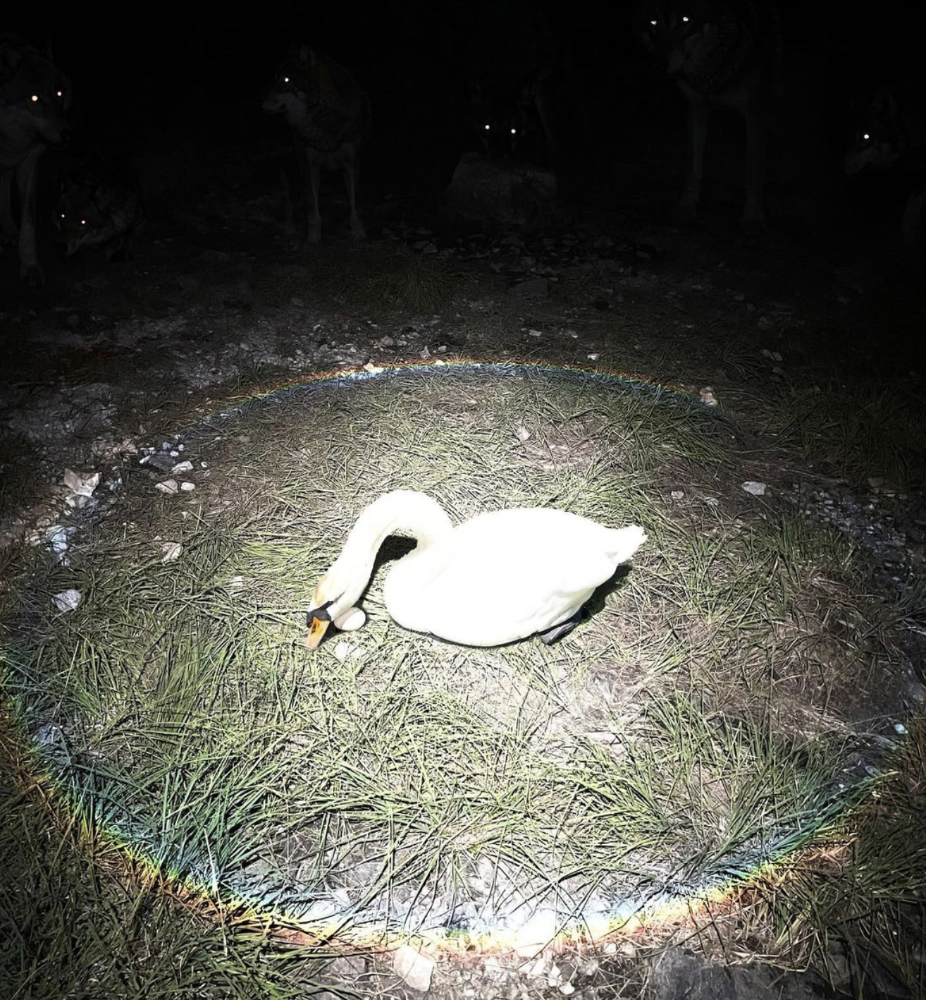

Noah Dillon is a fashion and fine art photographer. In his work he explores the absurdity of human conformation within modern American society. Commonplace in Noah's work is the analogy of brand iconography to religious imagery.
In this photoshoot with Nicolas Cage, Noah explores themes of vulnerability and isolation. In placing Nicolas Cage in the fetal position in the middle of a parking lot, Noah circumvents the standard of idolizing the celebrity.
This photoshoot for fashion brand Dion Lee explores a surreal reality in which the brand aesthetic exists. The tension on the leash combined with the empty collar highlights a quote used often by Noah, "I find that nothing happening in my photos is much more interesting than something happening in my photos."
Walker Bunting commonly explores themes of absurdism while questioning traditional beauty standards. More often than not his photos are captured using a digital camera with minimal editing in post. Walker creates contrast in combining this sense of familiarity with the absurdist subjects.
Often Walker creates scenes that are unresolved. In this image, the viewer is left to decide the relationship between the subjects. There are no clear indications of what might have happened before, after, or even during this image.
Walker's photographs often contain imagery that is hypersexualized to a nearly comedic effect. He creates scenes in which characteristics that are often considered "in bad taste" are the main motif.
In Nathaniel's photography she combines nature and science fiction in order to create ethereal scenes and landscapes. Often the photos are overexposed to create a glowing effect. Nathaniel often uses the contrast between good and evil to fuel her photos.
Nathaniel's photos often carry some sort of narrative. Their photos take place in a world that lands between fantastical and nightmarish; showcasing the beauty of the subject as well as an immediate danger.
In this photoshoot for fashion brand "DEATH AND BEYOND," Nathaniel is able to highlight the clothing on the subject without sacrificing any of their photographic style. In capturing lightning in the camera's rolling shutter, Nathaniel creates a captivating composition that represents their aesthetic ideals as well as the brand's.